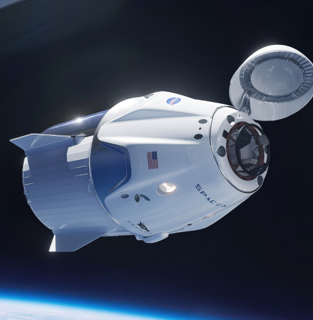
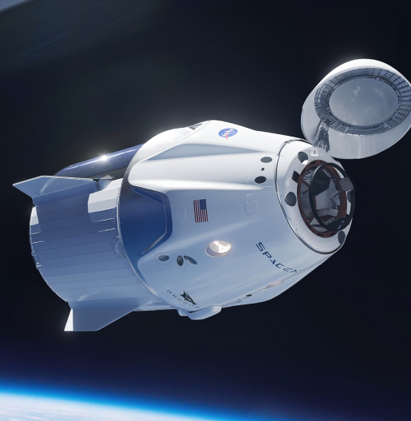

00
HOME
01
DESTINATION
02
CREW
03
TECHNOLOGY
SO, YOU WANT TO TRAVEL TO
SPACE
Let’s face it; if you want to go to space, you might as well genuinely go to outer space and not hover kind of on the edge of it. Well sit back, and relax because we’ll give you a truly out of this world experience!
01
PICK YOUR DESTINATION

MOON
See our planet as you’ve never seen it before. A perfect relaxing trip away to help regain perspective and come back refreshed. While you’re there, take in some history by visiting the Luna 2 and Apollo 11 landing sites.
AVG. DISTANCE
384.400 KM
EST. TRAVEL TIME
3 DAYS

MARS
Don’t forget to pack your hiking boots. You’ll need them to tackle Olympus Mons, the tallest planetary mountain in our solar system. It’s two and a half times the size of Everest!
AVG. DISTANCE
225 MIL. KM
EST. TRAVEL TIME
9 MONTH

EUROPA
The smallest of the four Galilean moons orbiting Jupiter, Europa is a winter lover’s dream. With an icy surface, it’s perfect for a bit of ice skating, curling, hockey, or simple relaxation in your snug wintery cabin.
AVG. DISTANCE
628 MIL. KM
EST. TRAVEL TIME
3 YEARS

TITAN
The only moon known to have a dense atmosphere other than Earth, Titan is a home away from home (just a few hundred degrees colder!). As a bonus, you get striking views of the Rings of Saturn.
AVG. DISTANCE
1.6 BIL. KM
EST. TRAVEL TIME
7 YEARS
02
MEET YOUR CREW
COMMANDER
DOUGLAS HURLEY
Douglas Gerald Hurley is an American engineer, former Marine Corps pilot and former NASA astronaut. He launched into space for the third time as commander of Crew Dragon Demo-2.
.png)
Mission Specialist
MARK SHUTTLEWORTH
Mark Richard Shuttleworth is the founder and CEO of Canonical, the company behind the Linux-based Ubuntu operating system. Shuttleworth became the first South African to travel to space as a space tourist.
.png)
PILOT
Victor Glover
Pilot on the first operational flight of the SpaceX Crew Dragon to the International Space Station. Glover is a commander in the U.S. Navy where he pilots an F/A-18.He was a crew member of Expedition 64, and served as a station systems flight engineer.
.png)
Flight Engineer
Anousheh Ansari
Anousheh Ansari is an Iranian American engineer and co-founder of Prodea Systems. Ansari was the fourth self-funded space tourist, the first self-funded woman to fly to the ISS, and the first Iranian in space.
.png)
03
MEET OUR TECH
THE TERMINOLOGY…
LAUNCH VEHICLE
A launch vehicle or carrier rocket is a rocket-propelled vehicle used to carry a payload from Earth's surface to space, usually to Earth orbit or beyond. Our WEB-X carrier rocket is the most powerful in operation. Standing 150 metres tall, it's quite an awe-inspiring sight on the launch pad!
THE TERMINOLOGY…
SPACEPORT
A spaceport or cosmodrome is a site for launching (or receiving) spacecraft, by analogy to the seaport for ships or airport for aircraft. Based in the famous Cape Canaveral, our spaceport is ideally situated to take advantage of the Earth’s rotation for launch.
THE TERMINOLOGY…
SPACE CAPSULE
A space capsule is an often-crewed spacecraft that uses a blunt-body reentry capsule to reenter the Earth's atmosphere without wings. Our capsule is where you'll spend your time during the flight. It includes a space gym, cinema, and plenty of other activities to keep you entertained.

 
